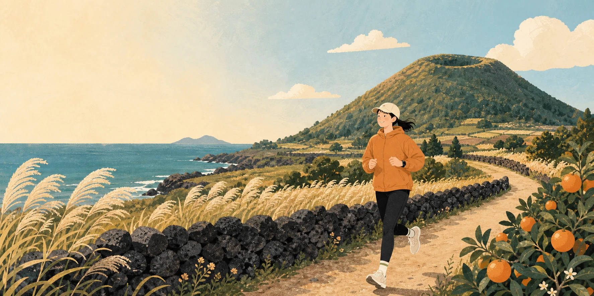
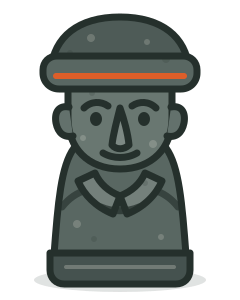
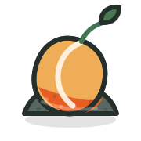

01
코스 정보의 파편화
거리·난이도·안전 정보가 제각각

Jeju running & trekking
제주 코스 완주부터 기록, 성장, 로컬 발견까지 하나로 잇는 모바일 웹 서비스
Problem
코스를 고르고, 현장에서 안전하게 움직이고, 완주 뒤 무엇을 할지까지 정보가 여러 곳에 흩어져 있습니다.
“한 번에 이어지는 제주 경험은 없을까?”
거리·난이도·안전 정보가 제각각
기록은 남아도 다음 행동으로 이어지지 않음
좋은 코스와 주변 장소를 따로 검색
Solution
선택 → 활동 → 보상의 짧고 분명한 흐름으로 첫 방문도 쉽게 시작합니다.
STEP 01
10개 제주 코스를 유형·지역·거리·난이도로 탐색합니다.
STEP 02
실제 보행 경로와 준비물, GPS 인증으로 활동을 안내합니다.
STEP 03
완주 기록은 제주방의 성장과 주변 로컬 발견으로 이어집니다.
Core experience
보기 좋은 코스 카드에서 실제 활동과 완주까지 끊김 없이 이어집니다.

완주가 쌓일수록
거리가 늘수록Motivation
완주 횟수로 돌하르방이, 누적 거리로 귤나무가 자라며 나만의 제주방이 완성됩니다.
Reliable by design
정적 배포만으로 핵심 경험을 제공하고, 필요할 때 서버와 운영 데이터 수집을 연결합니다.
설치 없이 링크로 바로 시작하는 반응형 인터페이스
HTML · CSS · JS네트워크가 불안해도 기록 흐름과 화면 상태를 유지
localStorage세션·검증·관리 기능은 Django API로 안전하게 확장
Django REST필요한 이벤트만 선택적으로 수집하고 재전송을 관리
Optional · SheetsOne more path, one more Jeju
혼디길은 길을 추천하는 데서 끝나지 않고, 다시 걷고 싶은 이유를 만듭니다.
감사합니다 · 질문을 받겠습니다